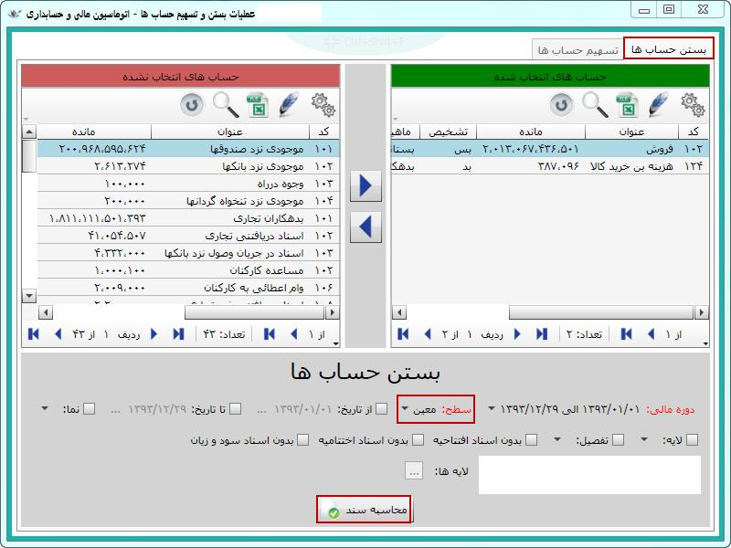
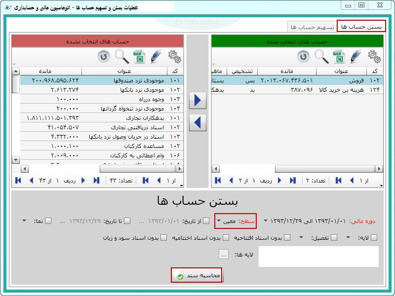

اگر نیاز بود که حساب های موقتی را به حساب عملکرد خاصی ببندید، این کار را می توانید به کمک این قسمت انجام دهید. با کلیک روی این منو صفحه مربوط به آن باز می شود.
صفحه شکل بالا مشابه با صفحه مربوط به «دفتر کل» و «دفتر معین» است از این رو از قسمت 1 حساب یا حساب های موقتی را که می خواهید به حساب عملکرد خاصی ببندید انتخاب کرده و آنها را به قسمت 2 منتقل کنید. سپس از قسمت 3 حساب عملکرد مورد نیاز را نیز انتخاب کرده و کلید "محاسبه سند" را بزنید تا سندی ظاهر شود که بر مبنای انتخاب شما صادر شده است، با ثبت آن بستن حساب ها صورت می گیرد.
در این مورد مثال زیر را مشاهده کنید:
 


در آخر روی محاسبه سند کلیک کنید، ابتدا پیغام زیر نمایش داده می شود و پس از زدن کلید بله صفحه حاوی سند حسابداری مورد نظر باز می شود:


در سند بالا حساب های کل و معین مناسب توسط سیستم انتخاب شده اند و همان طور که در شرح سند و شرح ردیف ها مشاهده می کنید این سند بابت بستن حساب ها می باشد. این سند را ثبت کنید و کار به پایان می رسد.